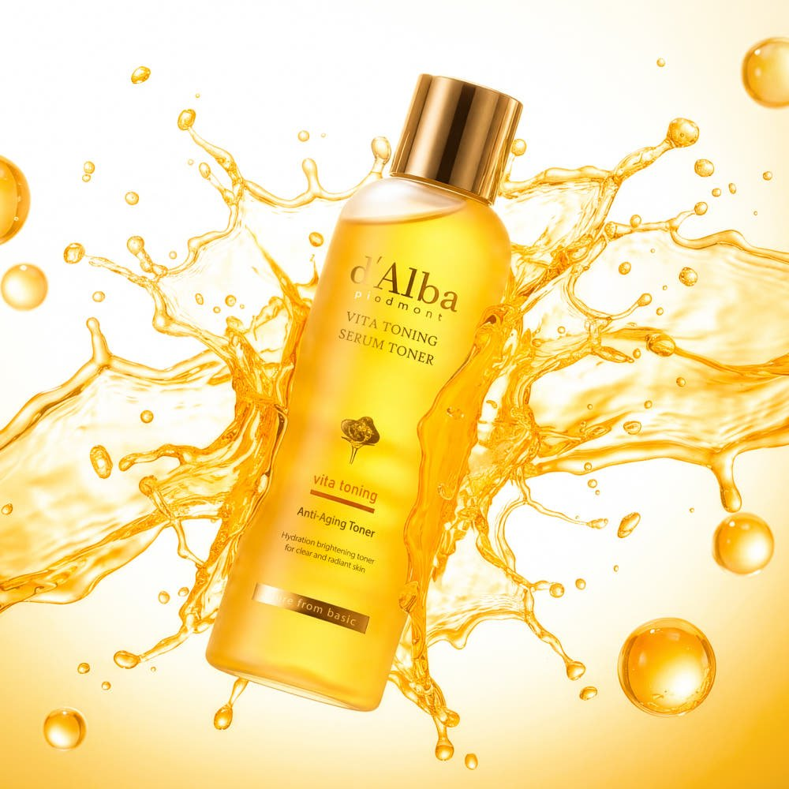
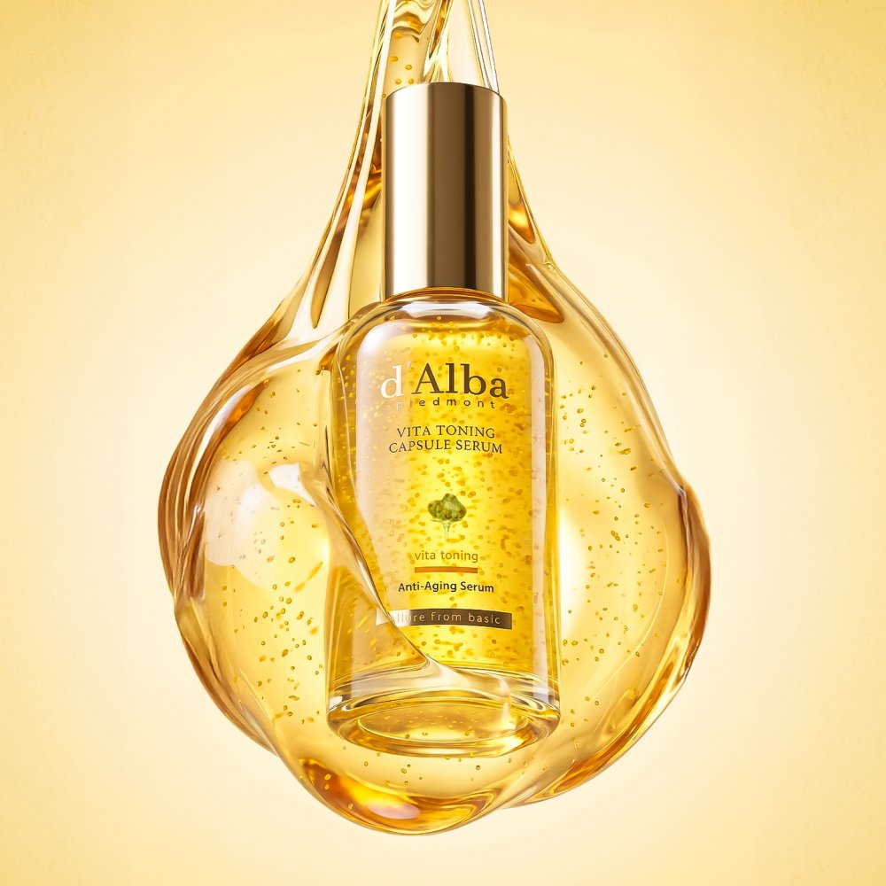

A Three-Step Set Built Around Dark Spots
d'Alba is the Korean brand behind those golden, vitamin-yellow bottles you see all over Korean beauty counters. Its Vita Toning line has one job: helping uneven tone, dark spots and visible pores look better over a set period of use.
In Korea, d'Alba sells the line as a "2-week dark-spot care program". The set includes a toner (180ml), a serum (100ml), a capsule cream in a 55g jar, and a gift bag. The line is registered in Korea as a whitening (brightening) functional cosmetic.


How It Feels Day to Day
The serum is the fun part. Tiny vita capsules burst as you spread it, then sink in. The cream is thick when you scoop it, but it doesn't feel sticky once it's on.
After the three steps, skin feels smooth, and makeup goes on well the next morning. Korean users who ran the full two weeks said dark-spot areas looked lighter and pores looked a little tighter. That's personal feedback, not a clinical result, so expect results to vary.


The 2-Week Routine
- Toner: Pat it over clean skin.
- Serum: Spread it and let the capsules pop and absorb.
- Capsule Cream: Finish with a thin layer.
- Daytime: Wear sunscreen, as with any brightening routine.
Product Details
| Attribute | d'Alba Vita Toning 3-Piece Set |
|---|---|
| Brand | d'Alba (Republic of Korea) |
| Set Contents | Toner 180ml · Serum 100ml · Capsule Cream 55g jar · Gift bag |
| Korean Status | Whitening (brightening) functional cosmetic |
| Care Focus | Dark spots, uneven tone, visible pores |
| Texture | Capsule serum; thick but non-sticky cream |
| Best For | A focused two-week brightening routine |
Pros & Cons
✅ Pros
- Three matching steps in one box, so there is no guesswork.
- The capsule serum is satisfying to use and absorbs quickly.
- A rich cream that still feels non-sticky.
- Comes with a gift bag, so it makes an easy present.
⚠️ Cons
- The Korean set may not match US Amazon listings, so check the sizes before you buy.
- The dark-spot results come from user feedback, and they take consistent use.
d'Alba Vita Toning Line
Toner · Vita-capsule serum · Capsule cream · Brightening routine